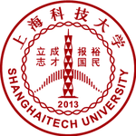

EXPERIENCE
Working
Experience
Experience
- Assistant Professor at ShanghaiTech University, Shanghai, China. (2019.10 -- present)
- Assistant Researcher at Max Planck Institute for Dynamics of Complex Technical Systems, Magdeburg, Germany. (2015.12 -- 2019.10)

Education Background
- PhD of applied mathematics at Delft University of Technology, Delft, the Netherlands. (2011.09 -- 2015.12)
- MSc of control theory and control engineering, Northeastern University, Shenyang, China. (2009.09 -- 2011.07)
- BSc of automatic control, Northeastern University, Shenyang, China. (2005.09 -- 2009.07)
Teaching Experience
- SI231 Matrix Computations, Fall 2020, graduate course, ShanghaiTech
- SI100b Introduction to Information Science and Technology (Python Programming Part), Spring 2020, undergraduate course, ShanghaiTech
- WI4012ta Numerical Analysis, teaching assistant (TA), graduate course, Fall 2014, TU Delft
- Power Systems Automation, Spring 2010, undergraduate course, NEU
Languages Skills
- Chinese: mother tongue
- English: professional working proficiency
- German: CEFRL B1, TELC-B1 certificate